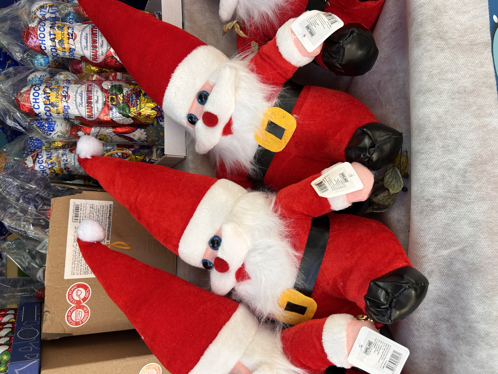
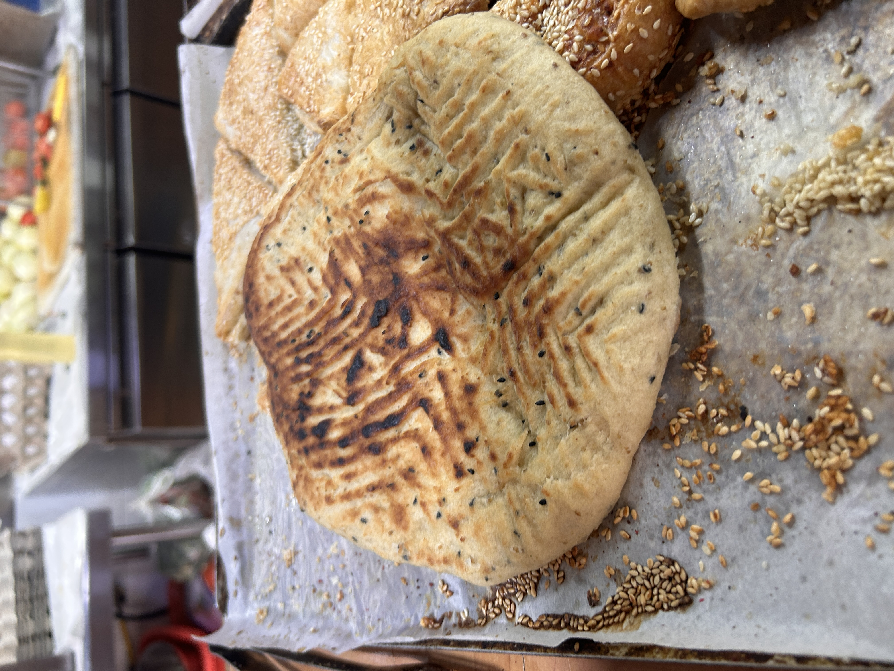

חולוד, מדריכת סיורים אלטרנטיביים בנצרת, אמרה לי שהסיורים שלה מפגישים נרטיבים, סיפורים של אנשים, תרבות ואוכל טוב. שלוש תחנות בחרה לנו, ולא יהיה כנאפה — אם מישהו ציפה לכנאפה, אמרה, אנחנו פה שוברים סטיגמות.
אנחנו שנייה לפני חג המולד, ואתה מצפה שהעיר תהיה מלאה בתיירים, גם מחו"ל וגם מהארץ. והיא ריקה לחלוטין. חולוד לא עטפה את המצב במילים יפות. הפשיעה היא בעיה כלכלית, אמרה, והפשיעה שלא מטופלת — המשמעות שלה זו התאבדות של החברה הערבית. גם המלחמה השפיעה, גם התיירות הפנימית נעלמה.
"הפשיעה שלא מטופלת, המשמעות שלה זו התאבדות של החברה הערבית. ומישהו עושה את זה ומפקיר אותה."
— חולודאבל בשביל להסתכל על הפוטנציאל של העיר, אמרה חולוד, אתה לא צריך לעשות שיווק לעיר הזאת. יש מישהו לפני 2024 שנים שעשה את הקמפיין הפרסומי הכי טוב בהיסטוריה.
חולוד לקחה אותי מהכיכר המרכזית לקפה רוזה. אחרי כמה צעדים זה הרגיש כאילו עברנו למדינה אחרת. את כל היופי שאתה רואה בחוץ, אמרה, זה לא העירייה ולא משרד התיירות — זה האנשים. בפנים פגשנו את אישם, הבעלים, שעזב קריירה בעיצוב גרפי והחליף נישה לעולם הקונדיטוריה והבריסטה.

קפה רוזה
קפה בוטיק · קונדיטוריה · בית קלייה
הוא הגיש לי לילות בירות — ממתק לבנוני בצבע לבן שמסמל את השלג של ההרים בלבנון. מי ורדים, סולט, חלב, פודינג ופיסטוק למעלה. הטעם עדין, לא מתוק מדי. יכולתי לדמיין את עצמי יושב בביירות ואוכל את זה.
אבל אחר כך דיברנו ביזנס. שאלתי אותו כמה זמן אפשר להחזיק מעמד ככה. הוא עובד מהבוקר עד הלילה, עושה הכל בעצמו — קונדיטוריה, קפה, הכשרת עובדים. פתוח שבעה ימים בשבוע כי הוא צריך כל גרוש. ממש קשה פה להתקיים.
"ממש קשה פה להתקיים. אני פותח שבעה ימים בשבוע כי אני צריך כל גרוש."
— אישם, קפה רוזה format_quote
בדרך למאפייה, שאלתי את חולוד מה עושים עם נצרת. להפתעתי, הייתה לה תוכנית סדורה: לחלק את הקהלים לשלושה — קודם כל החברה הערבית, שנוח לה יותר להיכנס כרגע. הם יהיו מעגל הביטחון. ברגע שהמקומיים יחזרו, גם יהודים ירגישו בטוח, ואז יגיעו התיירים מחו"ל.
"יש מישהו לפני 2024 שנים שעשה את הקמפיין הפרסומי הכי טוב בהיסטוריה."
— חולודמאפיית משהדאוי היא עסק משפחתי שמתמחה במאפים מיוחדים. עוד לפני שהספקתי להבין מי נגד מי, שריף, האופה הראשי, נתן לי לטעום פיתה מיוחדת — עם הרבה שמן זית, עניס, קצח ומחלב. מחלב הוא תבלין יקר שמכינים מזרעים של עץ מסוים של דובדבן. הפיתה חייבת בכל חג.

מאפיית משהדאוי
עסק משפחתי · פיתות מיוחדות · מחלב וזעתר
אבל הכוכב של המאפייה הוא הלאפה הממולאת באולש, לבנה, שמן זית ותבלינים — עם סומק מפוזר למעלה. חתכתי ביס. סוף הדרך. הלאפה נהדרת, עושר גם בטעם וגם בעין. הייתי במיליון מאפיות, אני מירושלים, הייתי במאפיות בעיר העתיקה ובמזרח. מאפייה כזאת לא הייתי.
"הייתי במיליון מאפיות, אני מירושלים. מאפייה כזאת לא הייתי."
— שאול, על מאפיית משהדאוי format_quote
ירדנו כמה מדרגות ממפלס הרחוב אל מסעדת תשרין, חלפנו על פני קישוטי חג מולד ונכנסנו פנימה. עץ חג מולד גדול קיבל את פנינו. השולחנות ריקים ברובם, אבל עטופים במפות לבנות ומפיות צבעוניות. היה שם חמים ונעים.
המסעדה שינתה את פני נצרת לפני עשרים שנה — הכניסו מלצריות, יין, אוכל שונה. זה לא רק חומוס וסלטים, סיפר תופיק הבעלים. על השולחן הגישו שנקליש — גבינה סורית עם עגבניות ונענע, פריקי, שישברק — כיסוני בצק ממולאי בשר בקר מבושלים עם יוגורט ונענע.
מסעדת תשרין
פיוז'ן ים תיכוני · מ-2000 · שנקליש ושישברק
חולוד סיפרה על הפריקי — חיטה ירוקה שהפלאחים היו משאירים בשדות כתעודת ביטוח, למקרה שיבוא קציר. היום זה הפך למאכל שנכנס גם למסעדות הכי קולינריות בתל אביב.
האוכל פשוט נהדר. השישברק לקח הכל. נפרדנו מתופיק ויצאנו החוצה. מה שנשאר איתי, מעבר לטעמים, זה הפער בין הפוטנציאל של העיר לבין המציאות. חולוד סיכמה: אנחנו נעשה את כל מה שצריך. מי שקשה לו עם זה, שישתה מים וינוח בבית. אנחנו נעשה את העבודה.
"אנחנו נעשה את כל מה שצריך למצות את הפוטנציאל עד הסוף. מי שלא בא לו, שישתה מים וינוח בבית."
— חולוד, מדריכת סיורים format_quote